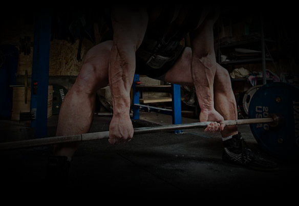
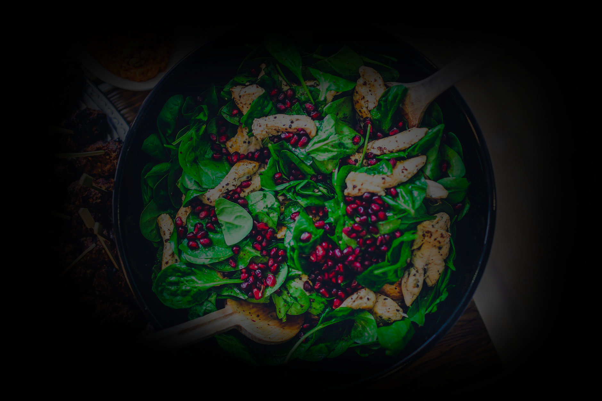

All'asse portante del Jiu Jitsu brasiliano, al Centurion è affiancata la moderna preparazione atletica. Ai fini di salute e prestazione sono impiegati i più efficaci metodi scientifici di sviluppo delle capacità condizionali, a cominciare dalla forza submassimale tramite sollevamento pesi. In particolare l'aumento della forza viene reputato importante ai fini della prevenzione degli infortuni muscolari e sopratutto articolari.

Nessuno può essere sano e in forma se si alimenta in maniera scorretta. Alla base di ogni prestazione c'è la giusta alimentazione, che al Centurion viene tenuta nella massima considerazione. In particolare si dà molto spazio al concetto di nutrizione, ossia all'insieme integrato di alimentazione più idratazione più integrazione. Senza rilasciare diete, ci si limita a suggerire cibi sani e idonei al fine del dimagrimento, dell'aumento della massa magra e in generale della massima omeostasi, puntando molto anche sul timing dei pasti e della scelta degli accoppiamenti tra alimenti.
Cresciuto in una famiglia di karateka, muovo i miei primi passi nel mondo delle AM a 18 anni,
col Tae Kwon Do WTF. Conseguo la cintura nera in
Corea.
Contestualmente al TKD seguii parallelamente lo studio del Wing Tsun,
del quale divenni istruttore e che continuerò a praticare a fasi alterne fino al programma di
1° grado tecnico(EBMAS).
All’asse portante del WT-Escrima filippino aggiunsi esperienze sporadiche in molti sistemi.
In seguito alla profonda disaffezione per le arti
tradizionali, mi dedicai allo studio della Thai Boxe con il DT
nazionale dell’epoca (FENASCO) fino al grado di istruttore; mi dedicai allora
all’insegnamento delle discipline da ring per diversi anni, con allievi che raggiunsero discreti
risultati agonistici.
Studiai la Boxe, ottenendo il diploma Istruttore
FPI nell’ottica di migliorare la tecnica pugilistica.
In parallelo agli SdC studiai intensamente discipline energetiche e
salutari cinesi, raggiungendo il livello di istruttore di Yi Quan sotto due
differenti scuole internazionali.
Nel 2003 mi avvicinai al Brazilian Jiu-Jitsu. Fortemente impressionato dalla
versatilità ed efficacia dell’arte, decisi istantaneamente di dedicare anima e corpo, sino al
punto di partire armi e bagagli per Roma, dove restai a lungo per allenarmi full-time.
Sono il fondatore di Team Centurion, una delle prime
scuole di BJJ a Firenze e in Toscana.
Ho conseguito la "faixa preta" (cintura nera) nel
marzo 2014 da Octavio
"Ratinho" Couto Jr. Partecipai a diverse gare di BJJ e Submission come atleta (Campionato
Europeo 2006, UK Open 2005) e come
insegnante, con risultati soddisfacenti per i suoi allievi, sempre medagliati in tutte le
edizioni.